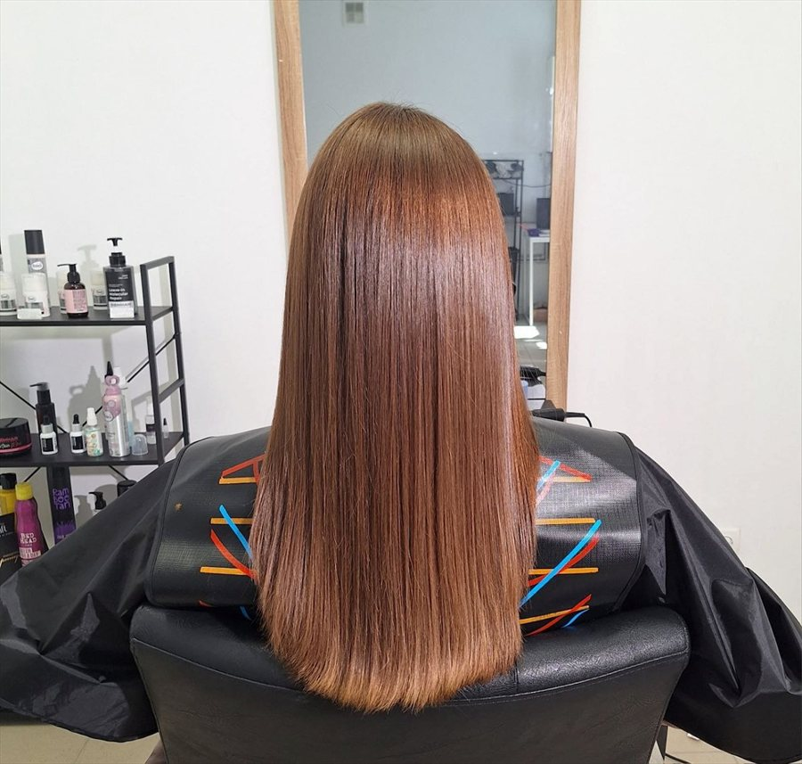
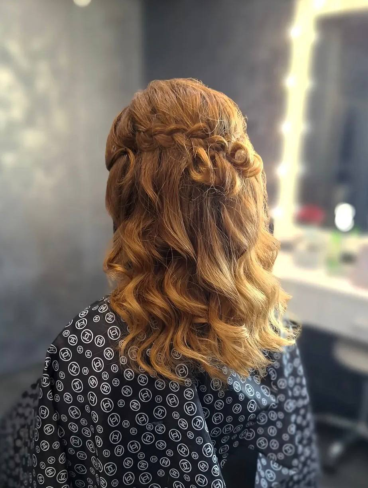
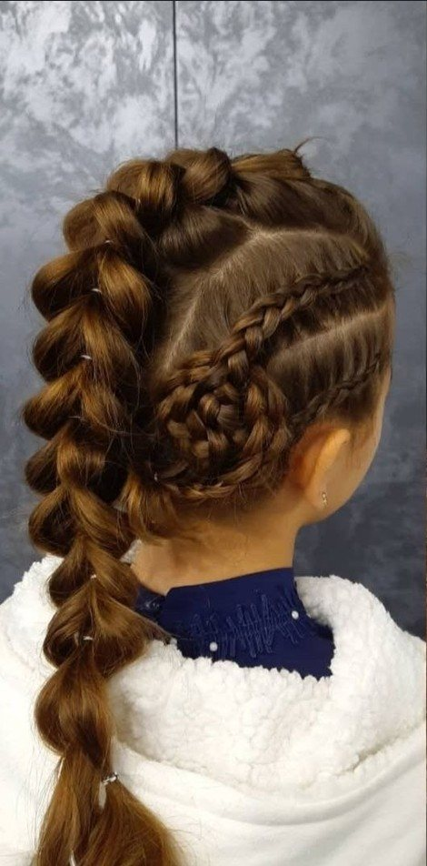

Реконструкція волосся
Відновлення структури та щільності волосся після фарбування, хімії та вигорання.
від 1 200 ₴
Перукар-стиліст Ірина Ковальова · Буча, поблизу Києва
Перукарня поблизу Києва: стрижки, фарбування, холодне відновлення волосся та зачіски — з індивідуальним підходом до кожного образу. Приймаємо клієнтів з Бучі, Ірпеня та Гостомеля.
Записатися
Про студію
Ми працюємо з індивідуальним підходом: спершу діагностика стану волосся, потім план догляду та лише після цього зміна образу. Тут ніхто не поспішає, а результат тримається довго.
Послуги
У студії в Бучі, неподалік Києва, Ірпеня та Гостомеля, доступні холодне відновлення волосся, ламінування, ботокс, різні техніки фарбування, жіночі та чоловічі стрижки, укладання й зачіски. Повний перелік послуг і цін — нижче.
Відновлення структури та щільності волосся після фарбування, хімії та вигорання.
від 1 200 ₴
Гладкість і блиск волосся після процедури ботоксу.
від 1 500 ₴
Різні техніки фарбування для створення унікального образу.
від 1 200 ₴
Оновлення образу за допомогою сучасних технік стрижки.
від 600 ₴
Охайна стрижка з урахуванням ваших побажань.
500 ₴
Весільні, вечірні та святкові зачіски для будь-якої події.
від 1 000 ₴
Результати
Процедури
Фарбування волосся, вихід з темного.

Відновлення волосся з використанням кератину для гладкості та блиску.

Процедура для гладкості та відновлення волосся.

Зачіски
Зачіска, що підкреслить ваш образ і настрій особливого дня.

01 Весільна колекція
Ніжні та довговічні образи для нареченої: від класичних зачісок до сучасних локонів.
Записатися
02 Вечірня колекція
Елегантні вечірні образи для будь-якого заходу: від класичних укладок до сучасних локонів.
Записатися
03 Святкова колекція
Святкові укладки для будь-якого торжества: від ніжних локонів до складних плетінь.
ЗаписатисяВідгуки
Була в салоні у свого улюбленого майстра на фарбуванні — і, як завжди, залишилася неймовірно задоволена! ❤️ Майстер дуже привітна, уважна, розуміє мене буквально з пів слова.
Згорнути
Одразу видно, що людина щиро кайфує від своєї роботи — і це відчувається в усьому: у ставленні, атмосфері та, звісно, в результаті. ✨ Після візиту отримала не лише красиве волосся, а й море позитивних емоцій та чудовий настрій. Сам салон дуже атмосферний, затишний і красивий — там справді приємно знаходитися. Дякую за красу, турботу та гарний настрій! 🥰 Обов’язково повернуся ще! ❤️
Дуже сподобався майстер, дуже обережно відноситься до вашого волосся, ціни мене приємно вразили. Супер майстер❤️ салон охайний все стерильно. 10000 з 10
Дуже задоволена результатом! Фарбування вийшло ідеальне — колір насичений, живий і саме такий, як я хотіла 😍
Згорнути
Після ботоксу волосся стало неймовірно м’яким, блискучим і виглядає здоровим. Майстриня дуже уважна, професійна та приємна у спілкуванні — все пояснила, підібрала догляд і зробила все з любов’ю ❤️ Однозначно рекомендую і обов’язково прийду ще!
Дуже подобається стригтись в Ірини, чує мої побажання 😍 завжди все на висоті 🫶🏻
Запис і контакти
Завітайте до нас
Студія Ірина Ковальова вул. Шевченка, 48| Понеділок – П’ятниця | 10:00 – 18:00 |
|---|---|
| Субота – Неділя | Вихідні |
Буча · вул. Шевченка
Карта показує вулицю; адреса студії — вул. Шевченка, 48.